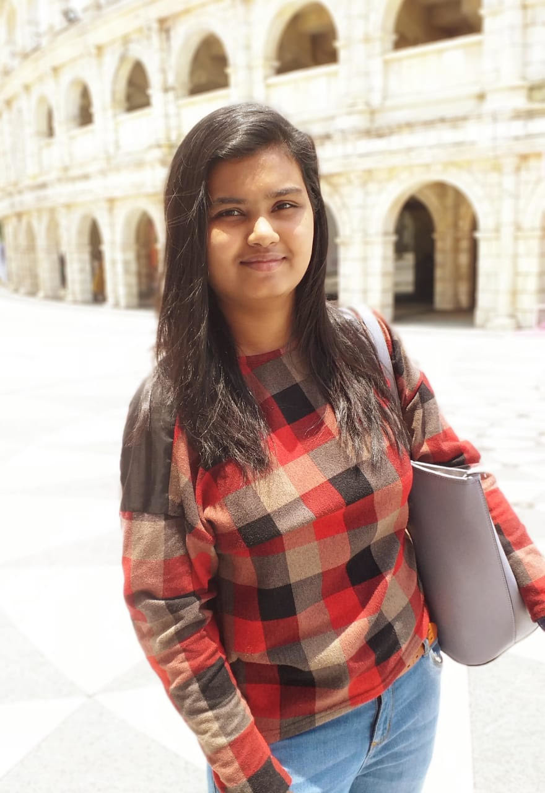
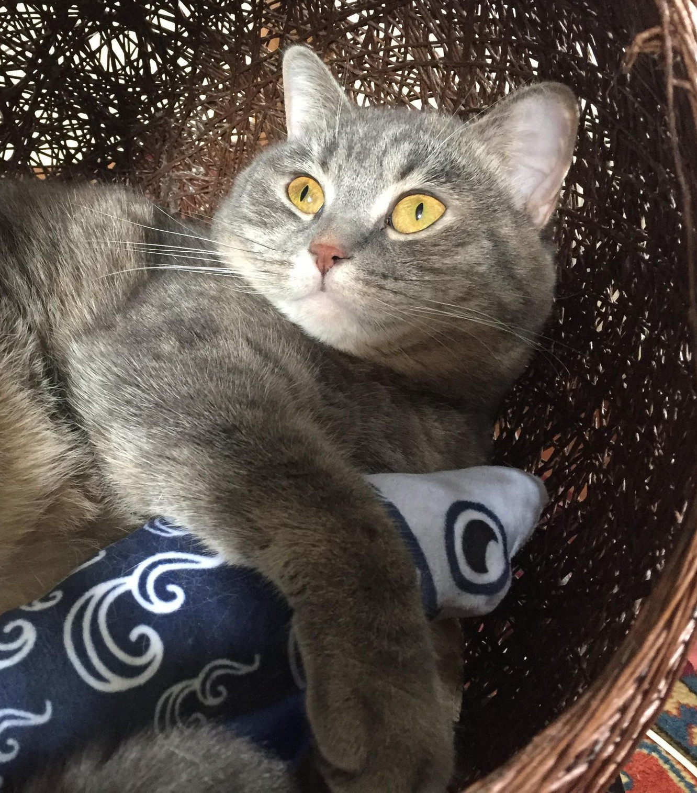
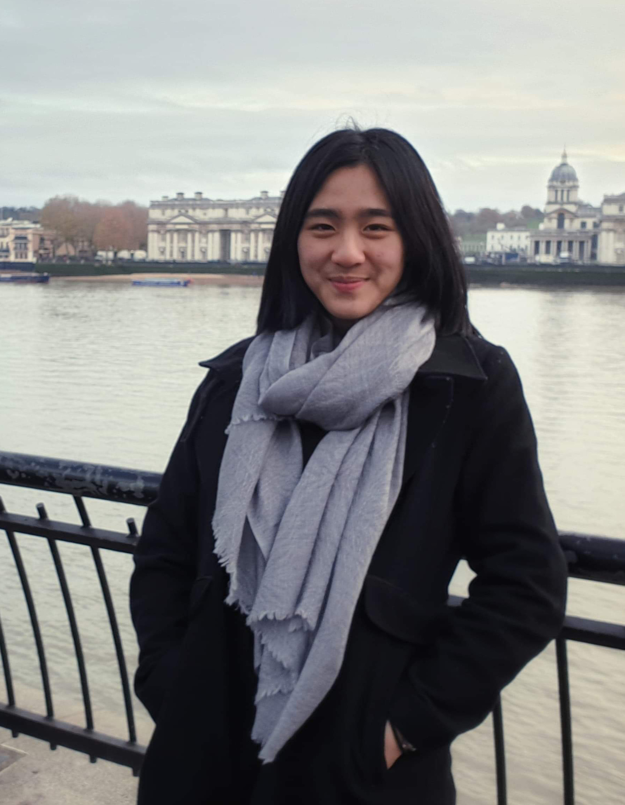

Current team

Han Seul Lee
PhD student (since Sep 2019)
Han Seul is a PhD student who joined in 2019. She is currently researching the South China Sea circulation, using a finite element method that utilises Firedrake. Her fascination is with simple models, and the degree to which they do (and do not) reflect the real world. She received her MPhys degree from the University of Oxford, where she studied the Antarctic Circumpolar Current using an eddy-parameterizing model, looking at different parameterization schemes.
Han Seul is a PhD student who joined in 2019. She is currently researching the South China Sea circulation, using a finite element method that utilises Firedrake. Her fascination is with simple models, and the degree to which they do (and do not) reflect the real world. She received her MPhys degree from the University of Oxford, where she studied the Antarctic Circumpolar Current using an eddy-parameterizing model, looking at different parameterization schemes.

Liu Yongqi (劉詠琪)
MPhil student + Doraemon (since Sep 2020)
(jointly supervised with Yan Wang)
Yongqi obtained her BSc Degree in Marine Science from Guangdong Ocean University in 2020. Her undergraduate study involved the study of mesoscale eddies, and she is interested in the area of the Southern Ocean. In the days to come, she will work on slope dynamics and energetics in the Southern Ocean.
(jointly supervised with Yan Wang)
Yongqi obtained her BSc Degree in Marine Science from Guangdong Ocean University in 2020. Her undergraduate study involved the study of mesoscale eddies, and she is interested in the area of the Southern Ocean. In the days to come, she will work on slope dynamics and energetics in the Southern Ocean.

Chinmayee Mallick
research assistant (since May 2020)
Chinmayee holds a post-graduate degree in Geomatics (with GIS specialization) from Hong Kong Polytechnic University. Besides working on a dissertation titled, "Characterizing spatio-temporal dynamics of forest fire using multivariate time series of MODIS data", Chinmayee did a research internship at National Cheng Chung University, Taiwan, in the Embedded System Lab. A learner at heart, Chinmayee has the experience of working as Research Assistant in different projects in The University of Hongkong (HKU). Chinmayee pursues painting to channel her creative juices.
Chinmayee holds a post-graduate degree in Geomatics (with GIS specialization) from Hong Kong Polytechnic University. Besides working on a dissertation titled, "Characterizing spatio-temporal dynamics of forest fire using multivariate time series of MODIS data", Chinmayee did a research internship at National Cheng Chung University, Taiwan, in the Embedded System Lab. A learner at heart, Chinmayee has the experience of working as Research Assistant in different projects in The University of Hongkong (HKU). Chinmayee pursues painting to channel her creative juices.

Julian Mak

Mithrandir (Miffy)
boss
I'm the boss cat and I don't like water.
I'm the boss cat and I don't like water.

Yongsu Na
PhD student (since Sep 2020)
Yongsu's main interest is a clear understanding of the natural phenomena associated with the ocean. He received his BSc and MEng from Korea University. He worked with Prof. Sangyoung Son on storm surge prediction using Delft3D and tropical cyclone prediction using echo state networks. He is currently working on the ocean mesoscale eddy parameterization using inverse methods and MITgcm. Along with his research, he enjoys playing sports (football, swimming, gym training) and skateboarding.
Yongsu's main interest is a clear understanding of the natural phenomena associated with the ocean. He received his BSc and MEng from Korea University. He worked with Prof. Sangyoung Son on storm surge prediction using Delft3D and tropical cyclone prediction using echo state networks. He is currently working on the ocean mesoscale eddy parameterization using inverse methods and MITgcm. Along with his research, he enjoys playing sports (football, swimming, gym training) and skateboarding.

Ellie Ong Qing Yee (王沁怡)
visiting student (Oct 2020 to Feb 2021)
Ellie is Malaysian, born and raised in Hong Kong, and completed her Integrated Master of Physics degree at the University of Oxford. For her Master’s Project, she worked with Prof. David Marshall, working on decomposing Southern Ocean winds in an idealised global ocean. She has also worked with Prof. Christian Jakob at Monash University on tropical convective organisation, and with Dr. Peer Nowack at Imperial College London on machine learning parameterisations for ozone feedbacks. At HKUST, she is working with Julian on studying baroclinic lifecycles using the GEOMETRIC framework. Outside of climate science, she enjoys reading, powerlifting and sewing.
Favourite Ocean: Southern Ocean
Ellie is Malaysian, born and raised in Hong Kong, and completed her Integrated Master of Physics degree at the University of Oxford. For her Master’s Project, she worked with Prof. David Marshall, working on decomposing Southern Ocean winds in an idealised global ocean. She has also worked with Prof. Christian Jakob at Monash University on tropical convective organisation, and with Dr. Peer Nowack at Imperial College London on machine learning parameterisations for ozone feedbacks. At HKUST, she is working with Julian on studying baroclinic lifecycles using the GEOMETRIC framework. Outside of climate science, she enjoys reading, powerlifting and sewing.
Favourite Ocean: Southern Ocean
Ruan Xi (阮曦, Bobo)
PhD student (since Sep 2020)
nothing here yet
nothing here yet

Floriane Oceane Sudre
research assistant (since Mar 2020)
Floriane's research interest is at the interface between physical coastal ocean processes and environmental issues, such as marine pollution and impacts on ecology. She is currently using a GETM model of the Pearl River Delta and Greater Bay area to look at turbulent dispersion in this region, with applications to passive dispersion.
Floriane's research interest is at the interface between physical coastal ocean processes and environmental issues, such as marine pollution and impacts on ecology. She is currently using a GETM model of the Pearl River Delta and Greater Bay area to look at turbulent dispersion in this region, with applications to passive dispersion.
Dearly departed

Turnip
staying in Oxford to harass the residents of Raymond Road